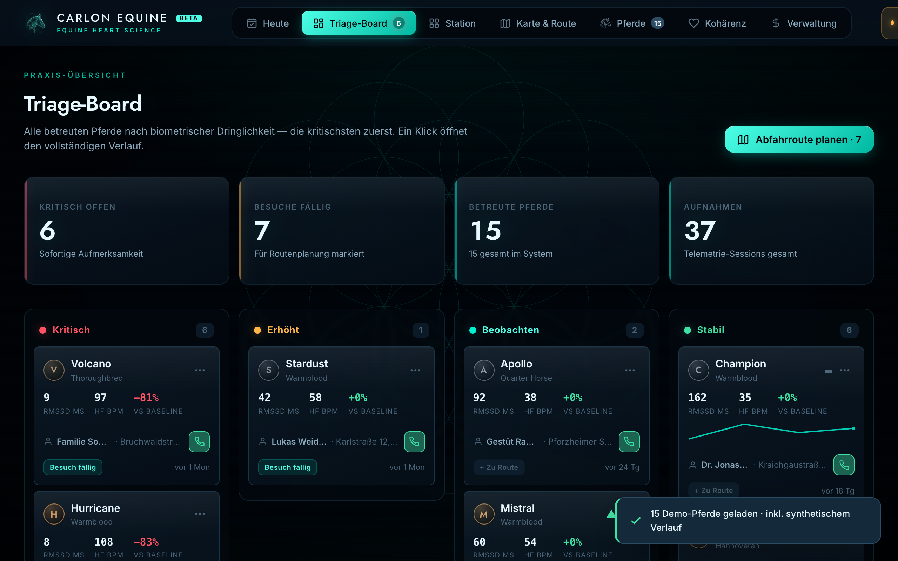
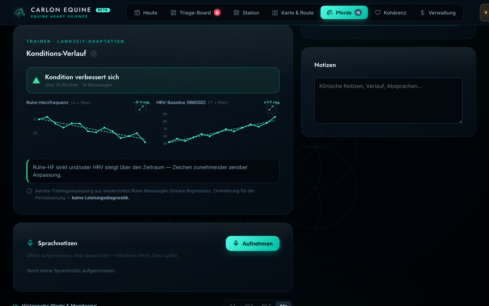
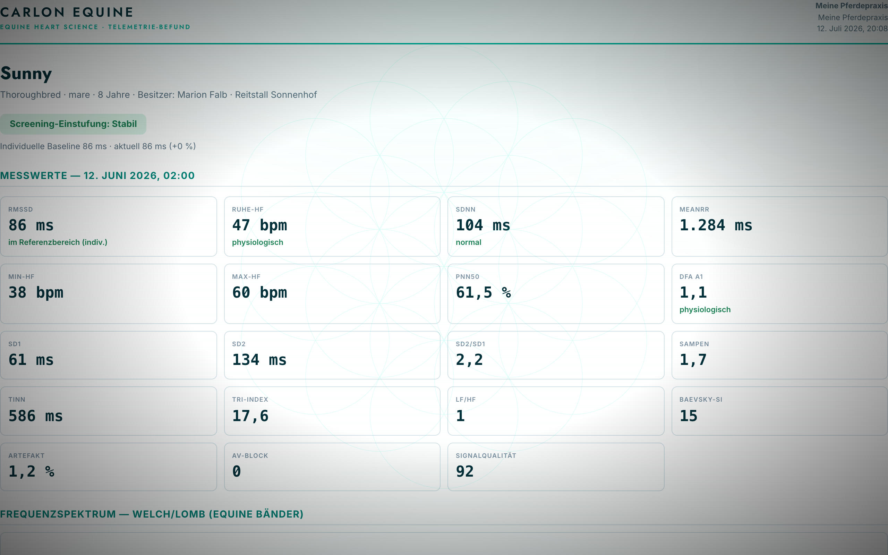

Betreuung, die nicht an der Stalltür endet.
Der Halter misst zu Hause mit dem Polar H10 — du liest den Verlauf, ordnest ihn ein und erreichst das Pferd früher. Ein Cockpit für Tierärzte & Kliniken: browser-lokal, kein Server, keine Cloud.
Um das Tier gebaut — und um dein Urteil.
Weniger Fahrten, mehr Pferde erreicht
Du siehst am Verlauf, wer dich wirklich braucht — die dringende Fahrt zuerst, die weniger dringende später. Dein Fachwissen erreicht auch Ställe, die du nicht jede Woche schaffst.
Verlauf statt Momentaufnahme
Ruhe-HRV über Wochen, gegen die eigene Baseline des Pferdes — Reha, Training und Belastung im Verlauf, für den Tierarzt zum Einordnen, nicht aus dem Bauchgefühl.
Deine Einschätzung bleibt deine
CARLON liefert die Daten und ihre Aufbereitung. Die Deutung, die Diagnose, die Entscheidung — alles bei dir. Kein Automatismus, keine Bevormundung.
Daten bleiben beim Pferd und bei dir
Browser-lokal, kein Server, keine Cloud. Du bist Verantwortlicher im Sinne der DSGVO. Nichts verlässt dein Gerät ohne dein Zutun.
Drei Schritte — vom Stall zum Befund.
Der Halter nimmt auf
Ruhe-HRV am Pferd mit dem Polar H10 — im gewohnten Stall, ohne Transport-Stress.
Du siehst den Verlauf
Das Cockpit sortiert die Pferde nach Auffälligkeit im Verlauf — das auffällige zuerst, mit Verlauf über die Zeit.
Frühe Einschätzung, dokumentiert
Ein klares Befund-PDF geht zurück an den Halter — deine Einschätzung, nachvollziehbar dokumentiert. Keine Diagnose durch die App; die Deutung bleibt bei dir.
Ein Blick, der Prioritäten setzt.



Lokal by Design.
Kein Server sitzt dazwischen. Die Daten laufen vom Gerät des Halters zu deinem und zurück — CARLON sieht sie nie. Du bist Verantwortlicher; die Verantwortung, und das Vertrauen, bleiben bei dir.
Belegt, nicht behauptet · Einschätzung, keine Diagnose · Kein Medizinprodukt (MDR/FDA) · Daten bleiben lokal — du bist Verantwortlicher · kein Server, keine Cloud.
Gestalte es mit.
Wir suchen eine Handvoll Tierärzte und Kliniken, um das Cockpit am echten Praxisalltag zu bauen. Zugang zum Cockpit während der Beta, ein direkter Draht zu Jan für jede Frage.